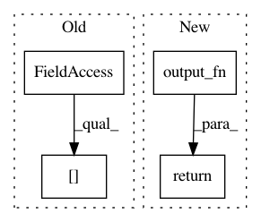

9976e56bead213c7095b80ce34a11390a4c33fe6,GPy/mappings/mlp.py,MLP,f,#MLP#Any#,83
Before Change
def f(self, X):
self._f_computations(X)
return np.dot(np.tanh(self.activation[-1]), self.W[-1]) + self.bias[-1]
def _f_computations(self, X):
W = self.W[0]
bias = self.bias[0]
After Change
N, D = X.shape
activations = np.tanh(np.dot(X,self.W1) + self.b1)
self.out = np.dot(self.activations,self.W2) + self.b2
return self.output_fn(self.out)
def update_gradients(self, dL_dF, X):
activations = np.tanh(np.dot(X,self.W1) + self.b1)
In pattern: SUPERPATTERN
Frequency: 3
Non-data size: 4
Instances
Project Name: SheffieldML/GPy
Commit Name: 9976e56bead213c7095b80ce34a11390a4c33fe6
Time: 2015-03-23
Author: james.hensman@gmail.com
File Name: GPy/mappings/mlp.py
Class Name: MLP
Method Name: f
Project Name: dpressel/mead-baseline
Commit Name: bfd0068e7a0922c06cdeff346a6c6339f98ae256
Time: 2019-11-19
Author: blester125@gmail.com
File Name: python/eight_mile/tf/layers.py
Class Name: BiLSTMEncoder1
Method Name: call
Project Name: dpressel/mead-baseline
Commit Name: 19d2bbc7d6e70836f34b83ac7702a0477e4b97b0
Time: 2019-11-19
Author: blester125@gmail.com
File Name: python/eight_mile/tf/layers.py
Class Name: BiLSTMEncoder1
Method Name: call